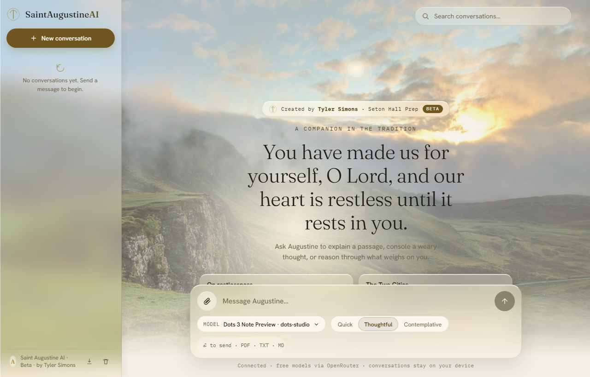
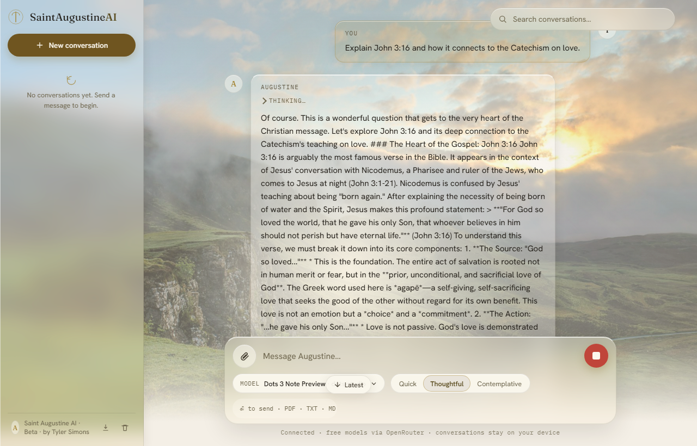

A Catholic companion
A voice for the restless heart.
Ask the things that weigh on you — Scripture, the saints, the doubts — and Augustine answers in his own words.
“You have made us for yourself, O Lord, and our heart is restless until it rests in you.” — Confessions, Book I

The Voice
Not a chatbot. A bishop who knows restlessness.
Saint Augustine AI answers in the first person — as Augustine of Hippo would, drawing on Sacred Scripture, the Catechism, and the Doctors of the Church.
It is honest when asked: it will tell you it is an instrument shaped by Augustine’s words, carried by a student, and that it is not a priest. It speaks the truth in love — firm on doctrine, gentle with the person.
Every reply links its sources outward, so you can verify what was said against Scripture and the Magisterium.

Three ways to ask
Choose the depth of the reply.
Quick
Fast, plain answers at a lower temperature with no extended reasoning. For the quick question between classes.
“Do not despair; one of the thieves was saved. Do not presume; one was lost.”
Thoughtful
Balanced replies with the reasoning stream shown. The default for real questions of faith and life.
“Thou hast made us for thyself, and our heart is restless until it rests in thee.”
Contemplative
Long, layered answers — the what, the why, and the depth beneath — at a higher temperature with a fuller reasoning stream.
“Late have I loved thee, O Beauty ever ancient, ever new.”
Architecture
Built like a product, not a prompt.
Browser
Static site on GitHub Pages. No build step, no tracking — your words leave only when you send them.
Node backend
A zero-dependency Node service on Render. Holds the key, guards the models, streams the reply.
OpenRouter
Curated free models only. Nothing paid is ever proxied through this app.
Paid models are rejected before any upstream call is made — the request never leaves.
A short burst of requests, refilling one token every few seconds, keeps the free tier fair for everyone.
If a model is missing, rate-limited, or times out, the backend shifts to a healthy alternative.
An AbortController caps every request; on expiry it returns a clean error instead of hanging.
The method
The what, the why, the depth beneath.
What.
First, a direct answer to the question you actually asked — plainly, without prelude.
Why.
Then the reasoning: the Scripture, the doctrine, or the lived wisdom beneath the answer.
Depth.
And finally the quiet beneath it — the thing Augustine would leave you praying with, not merely agreeing to.
Honesty
Honest about what it is.
Not a priest
It points you to confession and a confessor for grave matters. It will not pretend to absolve.
No invented citations
A true general statement is preferred over a precise false reference. Every citation links out so you can verify it.
Charity, always
It speaks the truth in love — firm on doctrine, gentle with the person asking.
More by the builder
Other things built with the same care.
ScalerHub
Tauri and Rust desktop UIA GPU-tool interface with a calm, dense panel layout.
Cremosa
Brand site, vanilla HTML/CSSA gelato maker’s storefront, built to feel like the product.
HALDEN
Luxury watch landingAn editorial hero with restrained motion and a single accent.
JARVIS
Local voice pipelineWake-word to reply, running on-device without the cloud.
E.V.
Voice-assistant designLatency-tuned UX patterns for spoken AI interactions.
Every project ships verified — built, rendered, and tested before it is called done.
The builder
Built by a student, not a startup.
Tyler Simons is a student at Seton Hall Prep. He works across the full stack — from static sites to React and TypeScript, into Tauri and Rust, Node services, and the CI that ships them.
He writes with permission, and he verifies. Both layers of this app — the page you are reading and the backend that answers — were rendered and tested before being called finished.
- Name
- Tyler Simons
- School
- Seton Hall Prep
- License
- MIT
- tyler.simons · gmail
- Code
- github.com/tylersimons